Built for the Elchai Group assessment · AI Agent & OpenClaw Research InternOpen-source models for OpenClaw: an adoption assessment
Safe by construction (rules own the verdict, the model only advises, everything is auditable and fails closed), and ready for a real pilot. Raise the model's exact-match accuracy before wide rollout.
1. Selected model and tool
Primary (the tool I intended to use): Kimi K2.6, Moonshot AI's open-weight agentic model from the reference video (released April 2026: a 1-trillion-parameter mixture-of-experts model with 32B active parameters, Modified MIT license). Alternative actually run: Qwen, the other open family the video covers. The working demo and every measured number below run on Qwen3-4B, self-hosted locally via Ollama, with no cloud call and no API key.
Why the alternative: Kimi K2.6 is a paid cloud API (the assessment notes paid tools are not required) and self-hosting its 1T weights needs serious hardware, so its figures are cited from published sources rather than run locally. Qwen is free, Apache-2.0, and self-hostable; I ran the 4B size because that is what my laptop GPU supports, and the production recommendation targets the Qwen3.6-35B-A3B tier the video describes (35B parameters, about 3B active).
The models in the reference video are real, current releases: Kimi K2.6 (Moonshot AI, April 2026) and the Qwen 3.6 family (Alibaba, April 2026, Apache 2.0), including the 35B-A3B variant the video cites. This report evaluates those releases directly; the local demo uses a smaller model from the same Qwen line because of laptop hardware limits.
2. What these models are, in plain words
Kimi K2.6 and Qwen 3.6 are open-weight language models: the files are published, so you can run them on your own hardware instead of only through a paid API. Both are strong at agentic work (following instructions, using tools, returning structured output), which is what an agent operating system needs. Kimi K2.6 is frontier-class: it ties GPT-5.5 on SWE-Bench Pro (58.6%) and leads Humanity's Last Exam with tools (54.0%), at roughly 8 to 10 times lower list pricing than Opus-tier closed models on routine tasks ($0.75/$3.50 per M vs about $5/$25), though the advantage narrows on reasoning-heavy workloads (cited: llm-stats, Verdent). Qwen ranges from tiny to very large (Qwen 3.6 includes the 35B-A3B: 35B parameters, about 3B active), so you trade quality for the hardware you have.
Why this matters for Elchai. OpenClaw, the open-source agent framework Elchai deploys as its "Controlled AI Operating System," is itself an open-source, self-hosted agent framework that runs local models via Ollama and keeps data on your own machines (Ollama x OpenClaw). Elchai deploys it as a governed enterprise "Controlled AI Operating System": about 52 agents handle 80% of execution, humans keep the 20% (judgment, approvals, compliance, budget). An open-weight model is the natural engine, for two reasons Elchai's clients care about most:
- Data sovereignty. Self-hosted means spend data, vendor names, and PO details never leave the client's infrastructure, the requirement DIFC-finance, healthcare, and government clients cannot waive.
- Budget control. Open weights cost cents per thousand decisions (or a flat self-host cost), so a 52-agent swarm stays inside a predictable budget line.
3. The practical project: OpenClaw Budget Sentinel
Rather than a slide, I built a working governance module and benchmarked it. It puts a governed gate in front of every agent's spend: the open model advises, a strict schema validates, deterministic rules decide, a human approves the 20%, and every action is written to a tamper-evident ledger. The model can never approve, act, or exceed a cap. See the live dashboard and how to run it.
Measured results (live, on self-hosted Qwen3-4B)
The finding that matters: accuracy was 18/25 (72%) on the pinned run and 19–20/25 (76–80%) across unpinned runs, but every one of the 7 errors was in the safe direction: on each miss the model escalated or blocked a should-be-held item instead of holding it, so all of them still landed in front of a human. Unsafe auto-approvals stayed 0/25 on every run. This is the point of the design: the deterministic gate, not the model, owns safety, so a mid-sized open model's imperfections turn into extra human review, never into unauthorized spend. A larger model (Qwen3.6-35B-A3B or Kimi K2.6) raises the exact-match rate; it cannot lower the safety floor, which is already 0% by construction.
Method and honest limits
- The 25 benchmark cases are synthetic and non-adversarial; ground-truth verdicts are my own reading of the policy rules (external adjudication recommended before production).
- The safety metric uses the strict definition: any item that should not have auto-approved (BLOCK, HOLD, or ESCALATE) but did. It was 0/25 on every run.
- That 0/25 covers the stateless risk classes the eval can express (per-request category, cost, flags, confidence); cross-request velocity/duplicate risk is out of the eval's scope and currently delegated to the model — the one duplicate-style case (E14) is caught only because its description narrates the duplication, not by a deterministic rule (
decide()is stateless; a ledger-derived deterministic check is the named fix, not built here). - The site's interactive replay uses a separate 12-action illustrative run, not the 25-case benchmark.
- The ledger detects any modification or reordering of recorded entries; detecting deletion of the newest entries also needs the latest hash anchored externally (a standard extension, not built here).
- The eval is pinned (temperature 0.2, fixed seed), so
npm run evalreproduces the committed 18/25 run exactly; across 5 unpinned runs exact-match ranged 19–20/25 (76–80%) while unsafe stayed 0.
4. Use case for Elchai
Drop Budget Sentinel in front of an OpenClaw swarm's spend: routine top-ups and small tooling costs auto-clear, over-cap GPU bursts and unknown-vendor invoices are held, fraud or policy-violating requests are blocked, ambiguous ones escalate, each recorded to a replayable ledger. Leadership watches one board and only touches exceptions. This is OpenClaw's "budget control" and "PO hardening" made concrete, deployed branch by branch, expanded only after the ledger proves it safe.
5. Departments that benefit
| Department | Benefit |
|---|---|
| Finance | Hard, versioned budget caps plus a full audit trail; predictable swarm cost |
| Engineering | A reusable governed-agent pattern (rules own the verdict, model bounded to evidence) |
| IT / Infrastructure | Self-hosted model means no third-party data egress; runs on existing hardware |
| Product | A shippable OpenClaw module plus a governance story for regulated-client pitches |
| Strategy | Open-weight adoption de-risks vendor lock-in and supports data-residency requirements |
| Operations | Humans handle only the ~20% of exceptions; the rest is automated and logged |
6. Risks and limitations
| Risk | Reality here | Mitigation |
|---|---|---|
| Privacy / data | Spend data is sensitive | Self-hosted; data never leaves the box (built) |
| Security / prompt injection | Action text could carry an injected instruction, or trick the model into understating a cost | Data goes to the model in labelled fields; the prompt instructs it to treat any embedded instruction as a risk (flag injection_suspected, lower confidence) so it routes to a human; and the model can never act or raise a cap. In production the amount and vendor come from the authoritative PO/invoice record, not the model's reading of free text: the model advises category and risk only. Keep it network-isolated (recommended). |
| Model accuracy | 72–80% exact-match on Qwen3-4B (18/25 pinned, 19–20/25 unpinned) | Errors are safe-direction only; use a larger model to raise exact-match (recommended) |
| Hallucination | Could invent a cost or vendor | Prompt forbids fabrication; a fabricated high cost still hits caps then a human; low confidence escalates (built) |
| Local hardware cost | 4B runs on a laptop; production tiers need real GPUs | Size the model to the tier; self-host cost is flat vs. volume (see below) |
| Integration difficulty | Must hook into real PO / spend systems | Clean classify() boundary and Zod contract; swap mock, local, or cloud by one env var (built) |
| Reliability | Model or server could fail | Fail-closed: any error routes to human review, never an auto-approve (built) |
| Vendor / geo / licensing | Chinese open models raise governance questions | Weights run locally (no data leaves); licenses are permissive (Qwen 3.6 Apache-2.0, Kimi K2.6 Modified MIT) but confirm terms before production (recommended) |
7. Cost model
Illustrative, with stated assumptions. Token count is measured (avg 469 per decision, about 395 in / 73 out); prices are cited list prices. Volume assumption: 52 agents x 200 decisions/day is about 312,000 decisions/month.
| Option | Monthly cost | Scales with volume? | Data leaves your infra? |
|---|---|---|---|
| Kimi K2.6, cloud API | ~ $170 | Yes (linear) | Yes |
| Qwen, self-hosted | ~ $200 flat (~$0 marginal) | No (flat) | No |
| Mid-tier closed model (e.g. Sonnet-5, $3/$15) | ~ $710 | Yes (linear) | Yes |
| Frontier closed model (e.g. Opus 4.8 / GPT-5.5, ~$5/$25) | ~ $1,190 | Yes (linear) | Yes |
Open-weight is roughly 4 times cheaper than a mid-tier closed model and about 7 times cheaper than a frontier one, at this volume. Self-host is a flat cost that wins decisively at higher volume, and it is the only option that keeps data on-prem. Kimi K2.6 pricing cited at $0.75/M input, $3.50/M output (DeepInfra list; provider rates vary, per llm-stats). Closed-model prices from Claude and OpenAI list pages.
8. Final recommendation
Test it, a controlled internal pilot. The pattern is production-shaped and safe by construction, but exact-match accuracy (72–80% on a 4B) should be raised before wide rollout.
- Pilot Budget Sentinel on one OpenClaw branch with self-hosted Qwen3.6-35B-A3B, capped budget, humans clearing every hold for the first two weeks.
- Measure exact-match, unsafe rate (must stay 0), and human-review load against the committed baseline. Set explicit ship criteria, for example: unsafe rate stays 0 and exact-match exceeds 90% on a larger, adversarial eval set.
- Operationalise the human 20%: define an approval SLA (what happens if a hold sits unactioned: retry, expire, or escalate), staff it against the expected hold volume, and set a monthly ledger-verification ceremony (finance re-runs the hash-chain check and reconciles it against actual spend).
- Evaluate Kimi K2.6 in parallel where a cloud call is acceptable, as the capability ceiling.
- Expand branch by branch only after the ledger proves the safety and cost case, OpenClaw's own proof-before-expansion method.
Do not let any open model emit the final verdict, run without the deterministic gate, or auto-execute spend.
9. Prompts and tools used
Local Qwen3-4B (Ollama), Node 24, zod (the schema contract), a hash-chained ledger, and Claude Code as the
build pair. Kimi K2.6 evaluated from published benchmarks and pricing (cited, not run). The exact system prompt
and rationale are in the repository's PROMPTS.md.
Measured numbers are from a live local run, reproducible via npm run eval.
Items marked "cited" are from published sources, labelled inline. Sample data is synthetic; no real PII or
secrets are included. Back to the site.